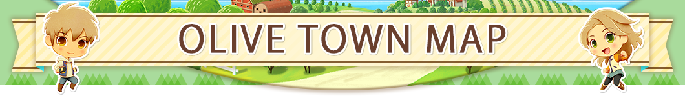
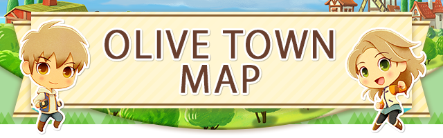
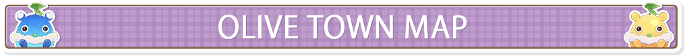
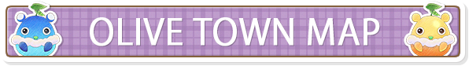
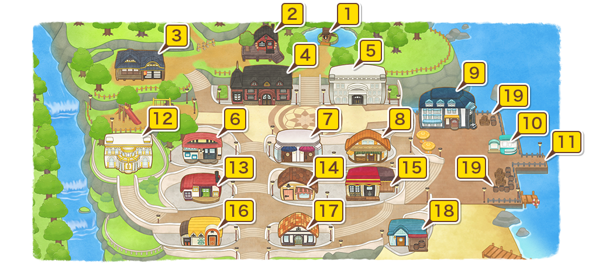

 
 

- 1Shrine
- Once you've progressed past a certain point in the game, the Shrine will become available for use. You can spend Sprite Points to raise your maximum stamina, increase your field level, unlock special locations, and much more!
- 2Ranger's Station
- A small cabin at the edge of town, currently used by Ralph.
- 3Iori's Residence: Seishin-an
- Iori and his retainer, Dosetsu, call this eastern-style building their home.
- 4Olive Hall
- You can take on requests from the bulletin board here or receive rewards for newly earned titles.
- 5Olive Museum
- Reina offers treasure appraisal services here, while Gloria accepts donations to the museum. The latter will accept pictures of wild animals and bugs, fish you've caught, or appraised treasures. If you're looking for a souvenir, Beth sells animal statues and replicas of donated treasures for your home.
- 6Worker's Base Tool Shop
- Clemens can upgrade your tools, your bag, and even change the color of your motorcycle for you.
- 7Salon Ailes D'ange
- The salon will open once the town has been developed up to a certain point. Clothes, hats, and accessories can be purchased here from Karina. At first you'll only be able to request a change in hairstyle, but as the town grows, you'll be able to request changes to your facial features and eye color.
- 8Nguyen's Flowers
- Nguyen will sell flower seeds and plant-based decor, and also offers special services to create bouquets and perfumes.
- 9Gull's Rest Hotel & Café
- A place to grab a quick bite to eat. Sally's meals will restore your stamina and bestow a variety of other beneficial effects, depending on what you order from her.
- 10Tourist Information Center
- Speak with Laura to make use of online features.
- 11Tourist Ferry
- Captained by Georg, this little ferry brings tourists to town each day.
- 12Lovett's House: Gourmet Palace
- A lavish palace owned by the bon vivant, Lovett. He'll post requests in the book in his house for novice chefs looking to hone their skills.
- 13Nigel's Handiworks
- Nigel sells and crafts farm facilities and furniture, and he'll also help you expand your home if you've got the necessary materials and money.
- 14Norman's Groceries
- Norman sells a variety of affordable cooking ingredients at his store.
- 15Capeside Bistro
- A restaurant where you can get a decent meal, guaranteed. Misaki's masterpieces will restore your stamina and bestow a variety of other beneficial effects, depending on what you order from her.
- 16The Hoof House Animal Shop
- Patricia and Bridget sell livestock and pets at their respective counters. Once your animal care level is high enough, you can also speak with Patricia to breed your livestock.
- 17Olive General Store
- Angela sells a little bit of everything, from materials for crafting to seeds and saplings for your farm.
- 18Marcos' House
- Marcos and Manuela live here with their son, Emilio, and their apprentice, Raul.
- 19Street Stalls
- Street stalls are run by the townsfolk, but unfortunately, their goods are for tourists only...